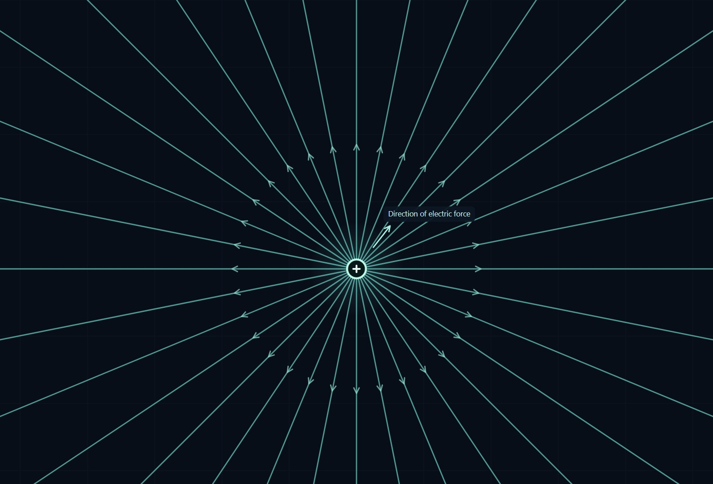
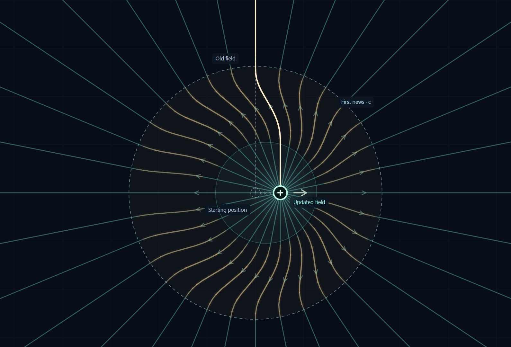
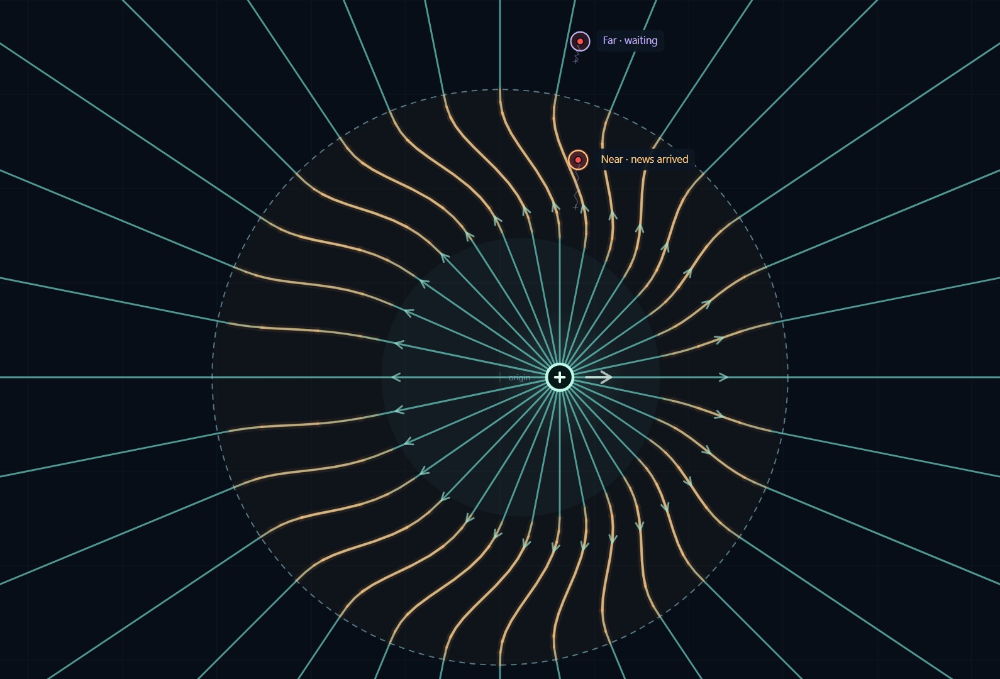

Electromagnetism · New demo
Watching a charge radiate
I’ve added a new electric-field demo to the site. Give the charge a push and watch the change spread outward at the speed of light.
Play the full demo ↗Start the Guided tour for a simple sequence: a charge at rest, one short boost, then steady coasting.

After the boost, the distant field still points toward the starting position; the news has not reached it yet. Closer in, the field has adjusted to the new motion. The connecting bend marks the outward-moving radiation pulse.

The charge can coast without making a new pulse. Radiation from the earlier acceleration keeps travelling. In the detector step, the nearer spring-mounted particle responds to the change before the farther one.

For the field equations, see Feynman’s lectures on moving charges.
Try a short push, release, then turn. Use WASD or hold the mouse or a finger to steer. Space pauses; right-drag pans; two fingers pan and pinch to zoom.
Open the full demo ↗
Comments and questions
Share a thought about this post or ask a question.